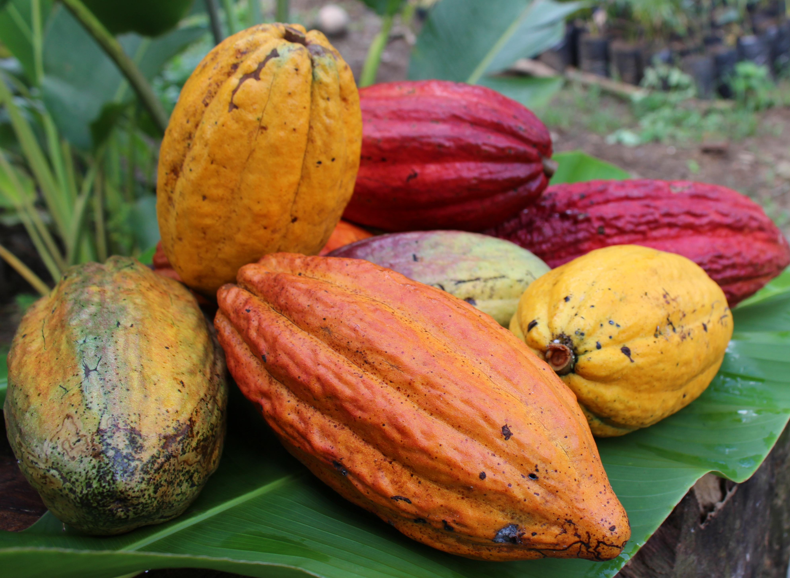

| O cacau no Brasil |
O Brasil é o sétimo maior produtor de cacau do mundo, produzindo cserca de 220 mil toneladas por ano. |
|  |
|
Com uma produção superior a 220 mil toneladas de amêndoas por ano, o Brasil é um dos maiores produtores de cacau mundial, com cerca de 600 mil hectares cultivados de cacau e 75 mil produtores, sendo 60% de agricultura familiar. Os estados do Pará e da Bahia são os principais produtores de amêndoa de cacau do Brasil, uma pequena parcela é produzida por estados como o Espírito Santo, Amazonas, Rondônia e Mato Grosso, além de outros estados. Em resposta de novas variedades plantadas em margens de rios, montanhas, cerrado, caatinga, e sob florestas de essências brasileiras, o cacau produzido no Brasil oferece ao mundo uma grande diversidade de sabores e aromas, capaz de satisfazer todos os tipos de gostos, pois a amêndoa do cacau pode ter o sabor, o aroma e o tamanho diferente em cada região. O cenário desafiador pelo qual o comércio exterior vem passando no últimos anos, também afetou a exportação de cacau no Brasil. Um dos principais motivadores foi a guerra na Ucrânia que impactou a safra, levando a um défict de oferta da amêndoa em 6% em relação à temporada anterior. Em 2022, o Brasil exportou 36 mil toneladas de chocolates e 48 mil toneladas de derivados do cacau, gerando U$340 milhões de dólares. A argentina é o destino principal, seguida por Estados Unidos e Chile. O país também se destaca no cenário mundial por reunir todos os elos da cadeia produtiva do cacau, produção, moagem, indústria chocolateira e é um dos maiores consumidores de chocolate. |